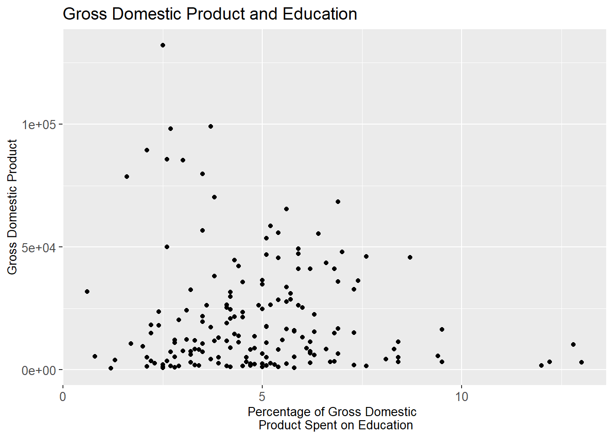
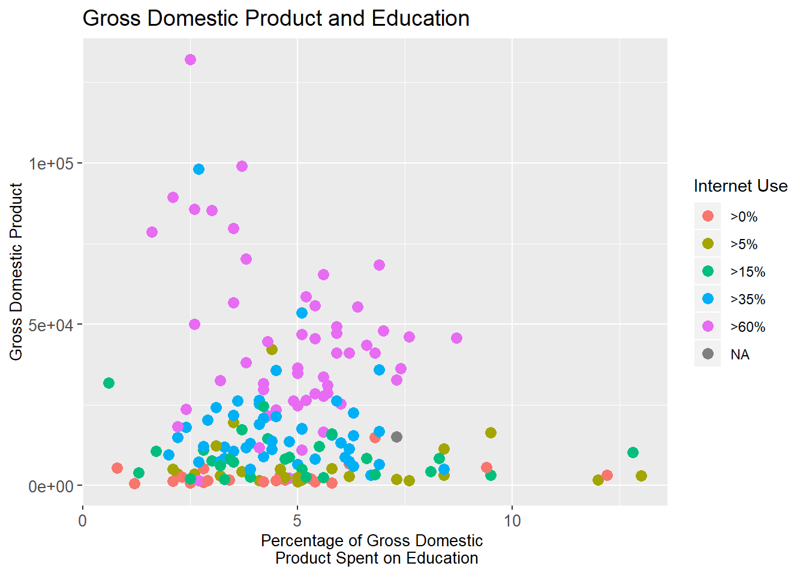
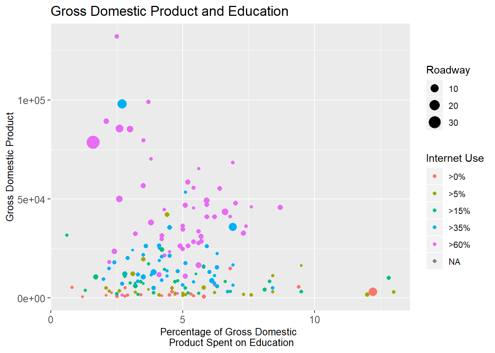
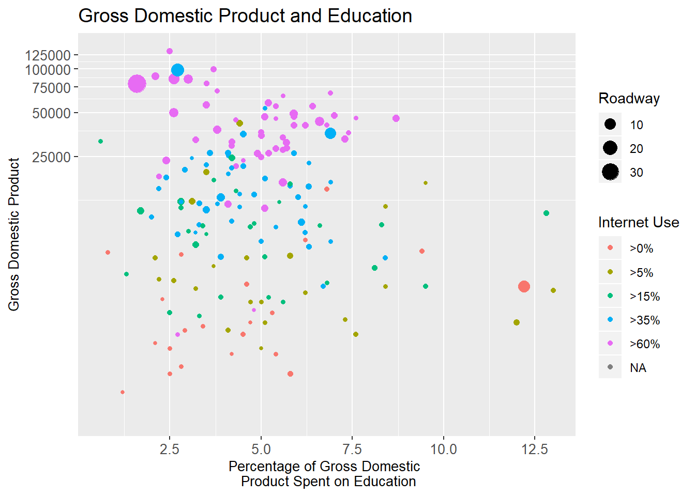
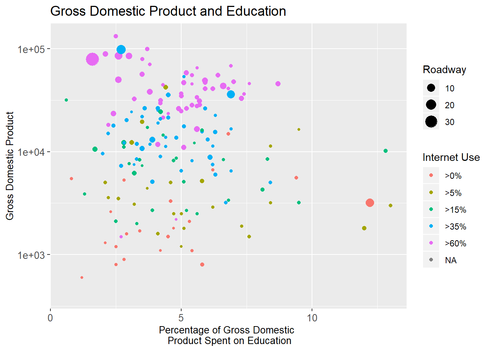
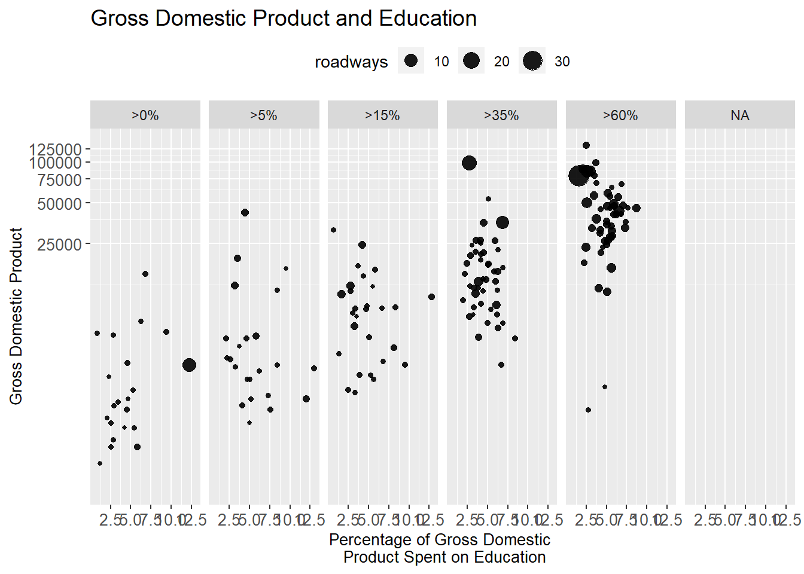

Exploratory data analysis is a loosely defined process. It is roughly the part between loading data in and the formal analysis you will perform. It includes (but is not limited to)
R has several systems for making graphs, but ggplot2 is one of the most elegant and most versatile. ggplot2 implements the grammar of graphics, a coherent system for describing and building graphs.
Think about the story your plot is telling. What will someone learn while looking at your plot? Some practical things to make a plot better.
In ggplot2,
To access the datasets, help pages, and functions that we will use in this chapter, load the packages by running this code:
library(tidyverse)
library(ggplot2)
library(mdsr)To make a graph, replace the bracketed sections in the following code with a dataset, a geom function, or a collection of mappings:
ggplot(data = <DATA>) +
<GEOM_FUNCTION>(mapping = aes(<MAPPINGS>))We will be using the data set CIACountries from the mdsr package. The CIACountries data table contains the following seven variables for 236 countries:
head(CIACountries)## country pop area oil_prod gdp educ roadways net_users
## 1 Afghanistan 32564342 652230 0 1900 NA 0.06462444 >5%
## 2 Albania 3029278 28748 20510 11900 3.3 0.62613051 >35%
## 3 Algeria 39542166 2381741 1420000 14500 4.3 0.04771929 >15%
## 4 American Samoa 54343 199 0 13000 NA 1.21105528 <NA>
## 5 Andorra 85580 468 NA 37200 NA 0.68376068 >60%
## 6 Angola 19625353 1246700 1742000 7300 3.5 0.04125211 >15%g <- ggplot(data = CIACountries, aes(y=gdp, x = educ)) +
theme(axis.text=element_text(size=10),
axis.title=element_text(size=10),
plot.title=element_text(size = 14)) +
ylab('Gross Domestic Product') +
xlab('Percentage of Gross Domestic \n Product Spent on Education') +
ggtitle('Gross Domestic Product and Education')Scatterplot using only the position aesthetic for glyphs:
g+ geom_point()
Scatterplot in which net_users is mapped to color:
g + geom_point(aes(color = net_users), size = 3) +
guides(color=guide_legend(title="Internet Use"))
Scatterplot using both location and label as aesthetics:
g + geom_text(aes(label = country, color = net_users), size = 3) +
guides(color=guide_legend(title="Internet Use"))Scatterplot in which net_users is mapped to color and educ mapped to size:
g + geom_point(aes(color = net_users, size = roadways)) +
guides(color=guide_legend(title="Internet Use"),
size=guide_legend(title='Roadway'))
From the graphs that we made it is difficult to discern differences in GDP because there is a right-skew in GDP and we made a choice to use a linear scale on our plots.
Scatterplot using the logarithmic transform of GDP that helps to mitigate visual clustering caused by the right-skewed distribution of GDP among cities:
g + geom_point(aes(color = net_users, size = roadways)) +
guides(color=guide_legend(title="Internet Use"),
size=guide_legend(title='Roadway')) +
coord_trans(y = "log10") # rescale the y-axis value
As an alternative to coord_trans() we can use the scale_y_continuous() function. The only difference is where the tick marks on the axis are drawn. The functions scale_x_continuous(), scale_x_discrete(), and scale_color() all perform analogous operations on different aesthetics.
Scatterplot using the logarithmic transform of GDP that helps to mitigate visual clustering caused by the right-skewed distribution of GDP among cities:
g + geom_point(aes(color = net_users, size = roadways)) +
guides(color=guide_legend(title="Internet Use"),
size=guide_legend(title='Roadway')) +
scale_y_continuous(name = 'Gross Domestic Product', trans = 'log10')
Using multiple aesthetics such as shape, color, and size to display multiple variables can produce a really hard to read graph! Facets are multiple side by side graphs used to display levels of categorical variables which can help.
Scatterplot using facets for different ranges of Internet connectivity:
g + geom_point(alpha = 0.9, aes(size = roadways)) +
coord_trans(y = 'log10') +
facet_wrap(~net_users, nrow = 1) +
theme(legend.position = 'top') +
theme(axis.text.x =element_text(size=10))
ggplot(data = <DATA>) +
<GEOM_FUNCTION>(
mapping = aes(<MAPPINGS>),
stat = <STAT>,
position = <POSITION>
) +
<COORDINATE_FUNCTION> +
<FACET_FUNCTION>Our new template takes seven parameters, the bracketed words that appear in the template. In practice, you rarely need to supply all seven parameters to make a graph because ggplot2 will provide useful defaults for everything except the data, the mappings, and the geom function. The seven parameters in the template compose the grammar of graphics, a formal system for building plots. The grammar of graphics is based on the insight that you can uniquely describe any plot as a combination of a dataset, a geom, a set of mappings, a stat, a position adjustment, a coordinate system, and a faceting scheme.